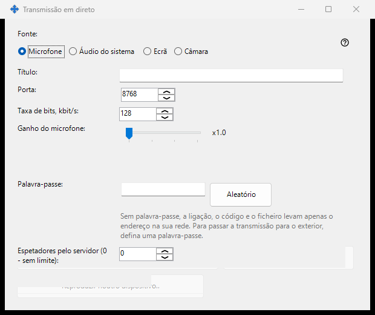
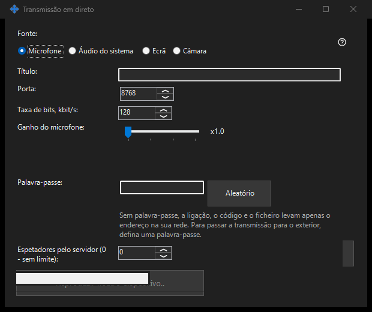

Transmissão ao vivo
Finalidade
Compartilhe tela, uma janela, câmera, microfone ou áudio do sistema pelo Share Manager. Abra uma transmissão no visualizador de 64 bits por link, código ou arquivo .fmsbcast. A captura começa apenas ao pressionar Iniciar.


Nesta ordem
Escolha a fonte e depois monitor ou janela individual, ou câmera e modo. Antes de Iniciar, confira título, senha, áudio e acesso LAN. Os espectadores recebem a imagem e o som escolhidos, inclusive conteúdo privado visível. Copie o link ou salve .fmsbcast quando estiver ao vivo. Parar encerra a sessão; fechar a janela capturada também encerra sua transmissão.
Os elementos
Transmissão ao vivo
Escolha a fonte e depois monitor ou janela individual, ou câmera e modo. Antes de Iniciar, confira título, senha, áudio e acesso LAN. Os espectadores recebem a imagem e o som escolhidos, inclusive conteúdo privado visível. Copie o link ou salve .fmsbcast quando estiver ao vivo. Parar encerra a sessão; fechar a janela capturada também encerra sua transmissão.
Definições do gestor · Definições de partilha SFTP · Definições do servidor de troca